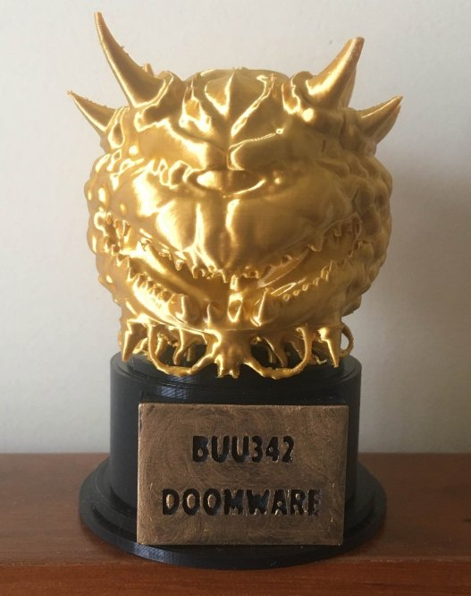

DoomWare


Released: November 28, 2016
Tags: Mapping, Zandronum, Multiplayer, ACS, DECORATE, Cacoward
DoomWare is a fast paced, competitive multiplayer WAD for Zandronum. Similar to Nintendo's WarioWare series, the player is thrust into an arena where they are faced with a random selection of minigames that test all sorts of skills. As the game progresses, the minigames get faster and harder. But the games themselves are not your only obstacles, as you're competing against other players for the high score.
I originally started work on DoomWare in late 2016, and I iterated on the concept over a few months. It eventually caught the attention of the Multiplayer Doom Federation, which offered to help me with the project by organizing multiplayer test sessions so that I could playtest and get feedback from other players. The multiplayer sessions helped me tremendously, but it also brought attention to the project, which resulted in it winning the 2020 Mutiplayer CacoWard. I kept iterating on it over the years, eventually releasing the final version in 2021 when I had hit the 100 minigame mark. I also added a lot of other features, including 10 different tie-breaker minigames, randomized game modifiers, team support, stat + achievement tracking with unlockables, seasonal map skins, and a fully functioning single-player mode.
DoomWare uses the Zandronum source port to allow for all its features, and is probably one WADs that used almost all of Zandronum's feature-set (at the tie). It also includes some minigames which completely transform and push the Doom Engine and ACS to its limits, which was possible due to the custom Client-Server networking system I had to write. I heavily documented all of the source code, and even wrote a wiki that covers everything one would need to know to host, configure, modify, and extend the gamemode.
I went to QuakeCon in 2024 to meet up with many of the Doom Community folk, and there I was given a physical version of my Cacoward. It unfortunately didn't survive the trip from Texas to Portugal without some minor cosmetic damage, but it is proudly sitting on my desk as a reminder of the awesome community that brought this project together. Big thanks to Scuba Steve for going through the effort of printing these out!
